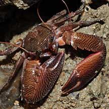
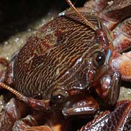
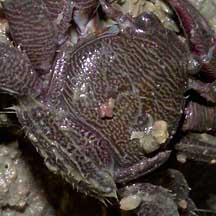
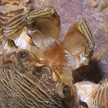
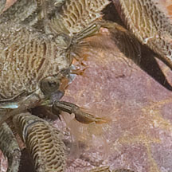
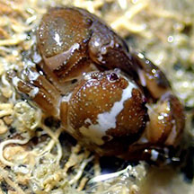

|
|
| porcelain crabs text index | photo index |
| Phylum Arthropoda > Subphylum Crustacea > Class Malacostraca > Order Decapoda > Anomurans |
| Porcelain
crabs Family Porcellanidae updated Dec 2019
Where seen? Porcelain crabs are plentiful under the stones of our rocky shores, scattering in all directions as a stone is lifted. Some porcelain crabs live on or with other larger animals. What are porcelain crabs? Porcelain crabs belong to the subgroup Anomura of the Order Decapoda. Anomurans includes hermit crabs. Porcelain crabs belong to Family Porcellanidae. Features: Body width 1cm or less. Body and pincers really flat, giving them a cartoonish appearance. But this form allows them to squeeze into nooks and crannies, and shelter in narrow places like under a stone. Show of Arms: The porcelain crab's huge pincers are not used to catch prey. Porcelain crabs mostly filter feed peacefully using their feathery mouthparts (see below). Some species may use their pincers to snip off or scrape bits of algae, and others may scavenge on dead animals. Some species use their pincers mainly against rival porcelain crabs in territorial and other disputes. |
 Huge flat pincers. |
 Long antennae emerging from outside instead of between the eyes. Changi, Jun 08 |
 Last pair of legs folded on the sides of the body. Changi, Jun 05 |
| Falling apart at the seams: The
porcelain crab tends to shed limbs if stressed, hence its common name.
This is a useful trait, in case a limb is trapped between rocks shifting
in the currents, or grabbed by a predator. A dropped pincer may continue
to move, to distract the predator while the owner makes its getaway.
The lost limb eventually re-grows with subsequent moults,
but this takes time. Not a true crab! The porcelain crab is not a true crab. True crabs belong to the subgroup Brachyura and have four pairs of walking legs and short antennae. In comparison, porcelain crabs have only three pairs of walking legs and often have long antennae that emerge from outside the eyes, instead of between the eyes. The fourth pair of legs of the porcelain crab are short and folded along the sides of the body. The abdomen of the porcelain crab is long and folded under the body. The abdomen remains free to move. In fact, when alarmed, a submerged porcelain crab may swim upside down by flapping its abdomen! What do they eat? Porcelain crabs filter feed at high tide. They have large mouthparts which are feathery with long silky hairs. These are extended into the water like nets to strain plankton from the water. Internal mouthparts scrape off any edible titbits caught on the hairs and transfer them to the mouth. |
 Feathery mouthparts. |
 Lazarus, Aug 12 |
| Porcelain babies: Porcelain crab
eggs hatch into free-swimming larvae that only later settle down and
develop into miniatures of their parents. Role in the habitat: Some porcelain crabs live with other animals. One kind of porcelain crab lives on a sea pen. Elsewhere, there are porcelain crabs that live in a shell occupied by a hermit crab, with tubeworms, in the siphons of bivalves, among the tentacles of sea anemones, on or inside sponges, or up the backside of a sea cucumber! Status and threats: Some of our porcelain crabs listed among the threatened animals of Singapore. However, like other creatures of the intertidal zone, they are affected by human activities such as reclamation and pollution. Trampling by careless visitors also have an impact on local populations. |
| Some Porcelain crabs on Singapore shores |


| Other sightings on Singapore shores |
 Kusu Island, Jul 20 Photo shared by Jianlin Liu on facebook. |
|
Family Porcellanidae recorded for Singapore from Wee Y.C. and Peter K. L. Ng. 1994. A First Look at Biodiversity in Singapore. in red are those listed among the threatened animals of Singapore from Ng, P. K. L. & Y. C. Wee, 1994. The Singapore Red Data Book: Threatened Plants and Animals of Singapore. ^from WORMS +Other additions (Singapore Biodiversity Records, etc) ++from The Biodiversity of Singapore, Lee Kong Chian Natural History Museum.
|
Links
|